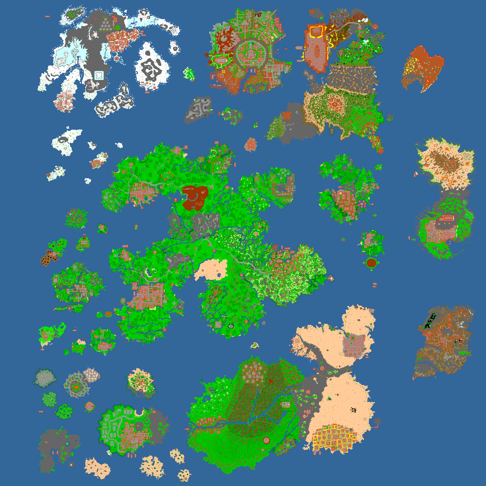

Mapa
Tibia é a porção de terra do jogo e seu nome é uma homenagem à deusa Tibiasula. Tibia é composta pelo Continente Principal ("Mainland" ou simplesmente "Main") e suas ilhas. De acordo com a história, Tibia foi a primeira casa dos humanos e conforme o crescimento da raça outras ilhas também foram habitadas. Atualmente existem muitas cidade e povoados nas diferentes regiões de Tibia.
A totalidade do mapa tibiano é acessível a qualquer jogador Premium Account, enquanto jogadores que acessam o jogo gratuitamente (Free Account) ficam restritos a apenas algumas cidades.
